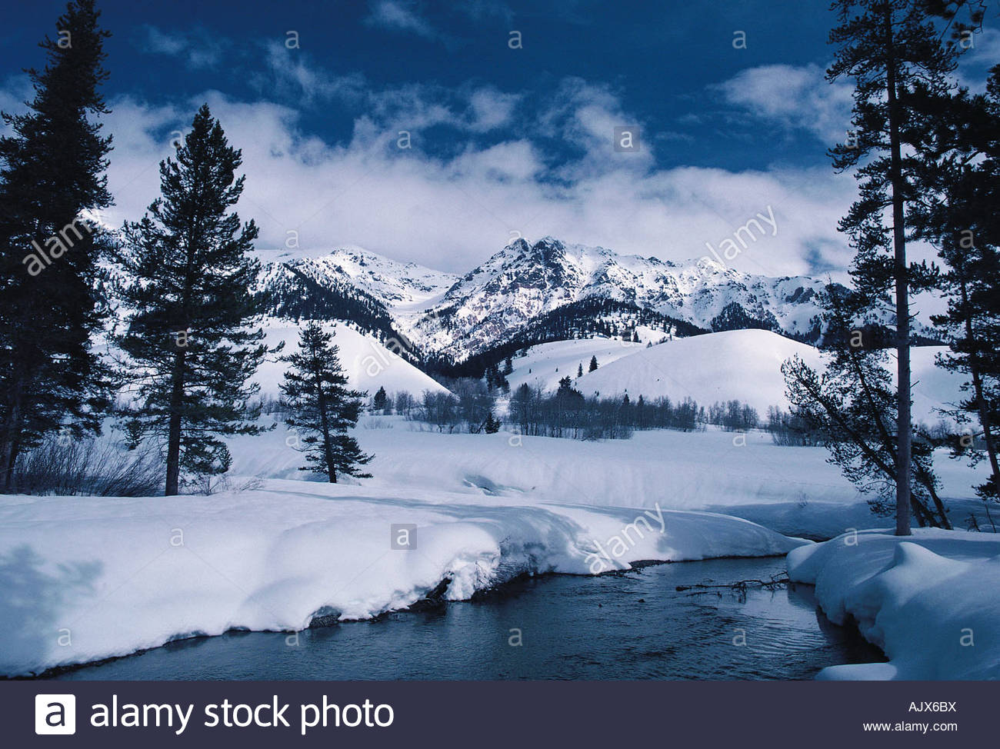

This week summary
 Tonight through Sunday. We are still watching our main area of snow slowing working east this afternoon. We should finally see it shifting east of I-15 by late afternoon/early evening. Accumulations haven`t been terribly high, but where it has been a bit heavier...we are seeing some slushy or slick roads. There is some blowing snow as winds are picking up, but impacts appear to be limited especially where it`s remained warmer and snow is wet. It is also helping that road temperatures are quite warm and many roads remain wet. Elsewhere, as main low takes shape across the Pacific Northwest...this will keep showers going across the central mountains going. There could be some brief impacts where snow falls heavy enough to drop visibility and create slick conditions.For almost 20 years, Intellicast has provided expert weather information to pilots, marine professionals, government organizations, media outlets and weather savvy individuals across the world. Through our advanced research and sophisticated radar and forecasting technology, we’ve been able to offer consumers highly advanced weather products. As you may know, Intellicast has been part of The Weather Company for quite some time now. Since joining The Weather Company in 2012, our organization has worked closely with fellow weather service provider Weather Underground, known for hyper-local weather data and its large global network of personal weather stations. Later in 2015, IBM acquired The Weather Company. This change showed a next step in that continued evolution, while continuing to offer superior forecasting and weather products to consumers and businesses. As both Weather Underground and Intellicast are committed to providing the most accurate, local weather information possible, it was quickly evident that combining our data networks, advanced technologies and engineering resources would allow for enhanced accuracy and usability of our products, radar and forecasts.